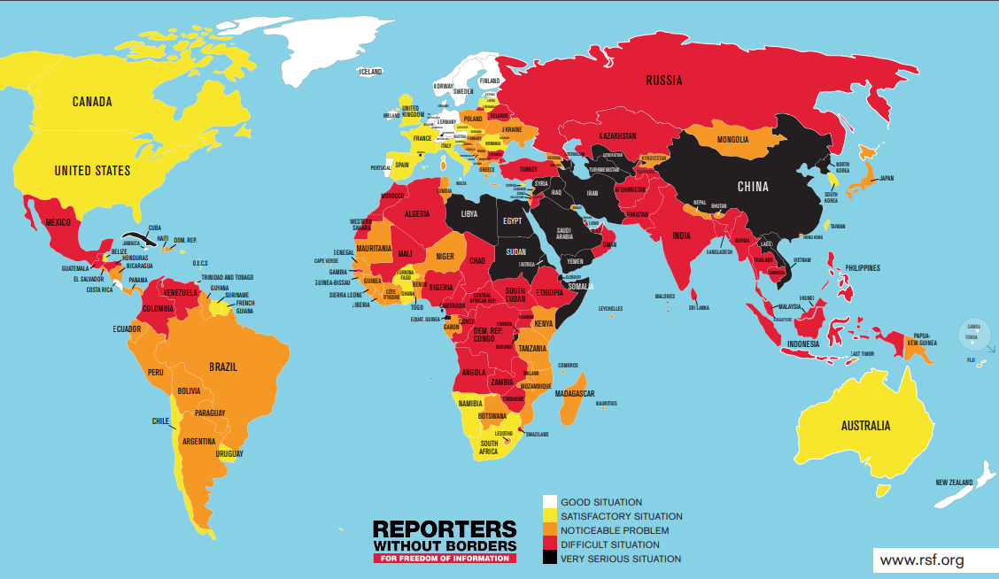

Coinciding with the theme of this class, I have decided to pick freedom of I information as my cause for this class. Like Cairo said in his book the purpose of data is to better provide the maximum number of people with as much data as possible to help better inform the way that they live their lives. As someone who values free-thinking, I agree with this idea and believe that people should have access to the as much information as possible so that they are free to interpret facts and create model of truth free from outside influence.
For my csv file, I downloaded the world press freedom index from Reporters Without Borders website. The important values in the sheet contain the country's name, rank within the index system, and 2017 rank. Though the topic of “fake news” has long been featured in the news since Donald Trump's presidential campaign in 2016, news reporters remain an integral part of continuing the flow of information and giving people the facts and data necessary to better their communities. While conditions for journalists across the world have certainly been improving, the killing of Saudi Arabian journalist Jamal Khashoggi by Saudi Arabian operatives last October shows that the world has much farther to go before true freedom of information can be achieved. In taking this up as my cause for this class, I hope to use data to illuminate where and how we can improve the transfer of information.
Link to CSV file